iPhone & iPad · Open source
A phone as your robot's face.
OpenHead turns an iPhone or iPad into an expressive robot head. Your robot, a Python script or an AI agent makes it smile, look around, talk and show things, over your own Wi-Fi.
Point the iPhone camera at the code to open the app on the App Store.
The iOS app OpenHead Robot Face for iPhone and iPad. The App Store page opens when the app is released; until then it is in beta on TestFlight.
A desk AI assistant
A 3D render of the bench rig: an iPhone 12 on the four-servo neck from Open Duck Mini. It follows your face, talks, maps the room with the back camera while the front camera watches you, and streams every sensor to your agent. Video of the real rig comes next.
Build it yourself: printed parts, parts list, firmware and an MCP server for the neck are in OpenHead desk body (GitHub).
Everything a robot head needs
A phone already has the screen, sensors and radio. OpenHead makes them addressable from the rest of the robot, which needs to know nothing about iOS.
28 expressions
Happy, curious, thinking, surprised, worried, laughing, smug and more. Blend them, hold them for a moment, or layer a quick reaction on a mood.
Eyes that live
Look at any point on the screen or a direction from the head. Blinking, breathing and small eye movements keep the face alive between commands.
A mouth that talks
The robot streams how loud it speaks, 25 times a second, and the mouth follows within about 70 ms. Emotions are separate, so mood can change mid-sentence.
Subtitles
Text on top of anything, for a robot without a speaker or an AI answer streaming in word by word. The mouth can move with the text.
Pictures, video, web
PNG, JPEG, animated GIF, WebP and SVG; H.264 video; web pages. Keep the face running in a corner while they show.
Camera view with HUD
See what the head sees, with a sci-fi heads-up display: boxes around faces, a locked target, compass, horizon, battery and your own lines.
Face tracking
Tracks several faces at once, with direction, size and place on screen, 15 times a second; with ARKit also the distance. The robot's eyes follow the person in front of it and keep eye contact.
Knows where it is
ARKit tracks the head's position and orientation in the room, 60 times a second, next to the motion sensors at up to 100 Hz. From 0.3, GPS, barometer, magnetometer and compass tell it where it is outside.
Three looks, one set of expressions
Themes are data, not code: shapes, colours and images in a folder. Every theme has the same 28 expressions, so the robot never has to care which one is on.
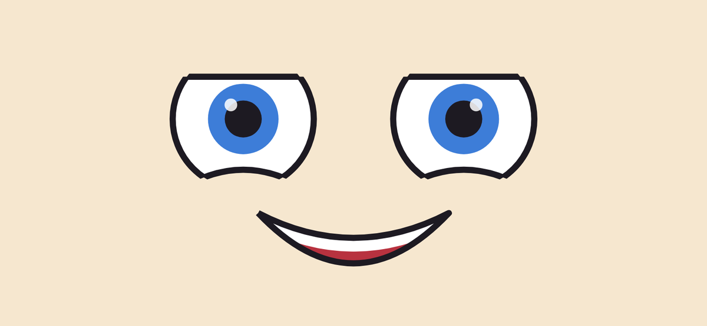
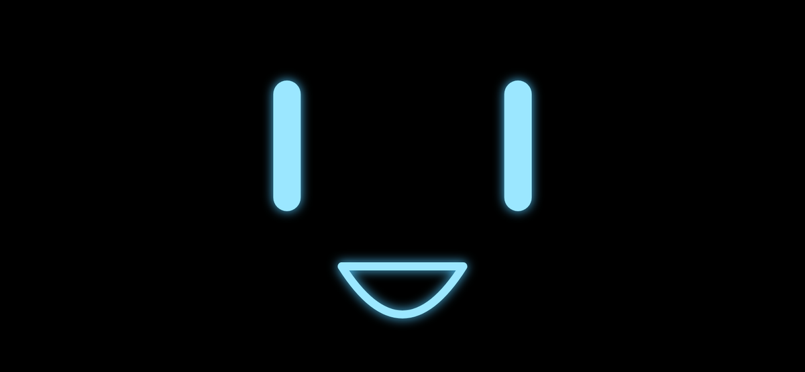
See all 28 expressions in every theme
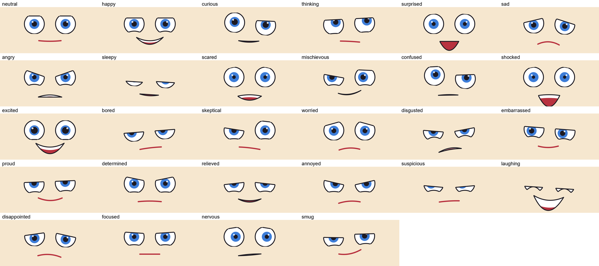
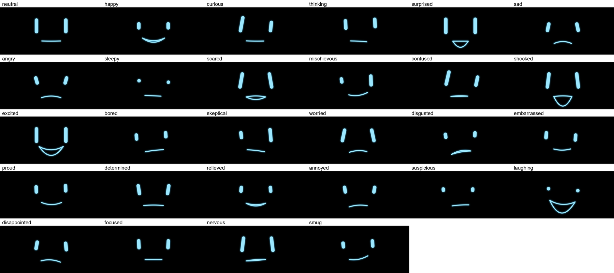
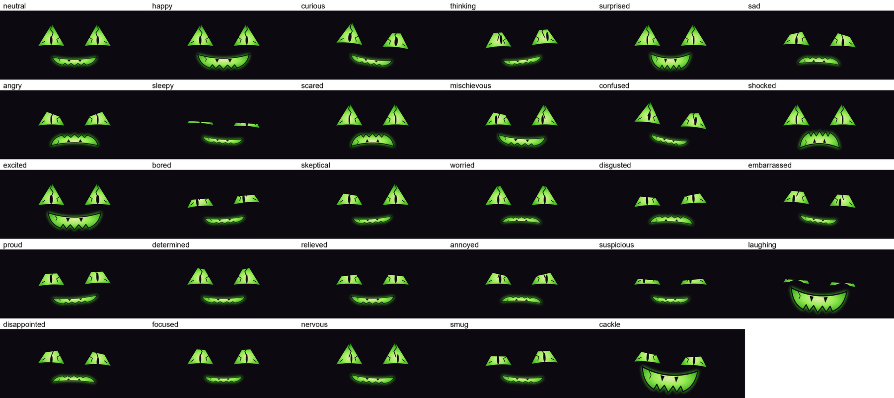
See what the head sees
Show the front camera with a heads-up display drawn over it. The HUD marks every face, locks on the nearest one and shows the head's own readings. Four looks, all data like the face themes, so you can make your own.
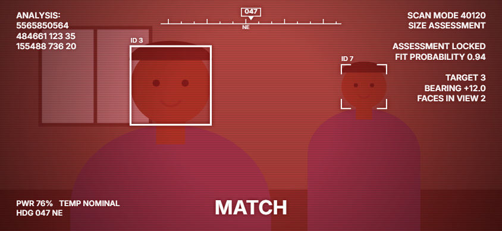
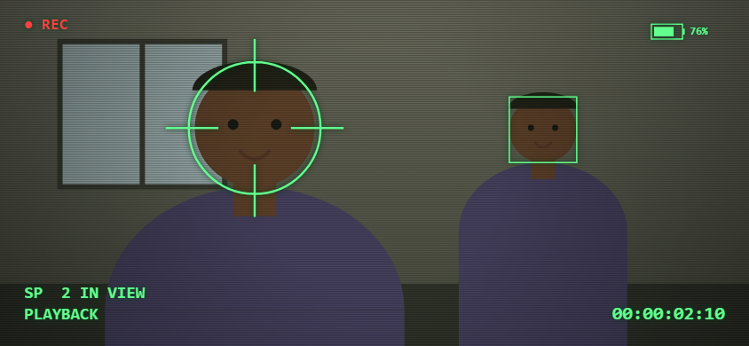
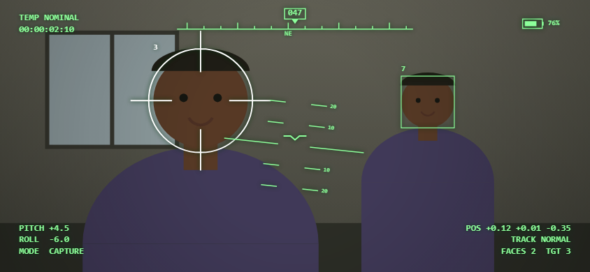
On a real phone
Screenshots from an iPhone 18 Pro: the box sits on the face it found, the eyes follow it, and the phone's own battery, heading and tilt are on the HUD.
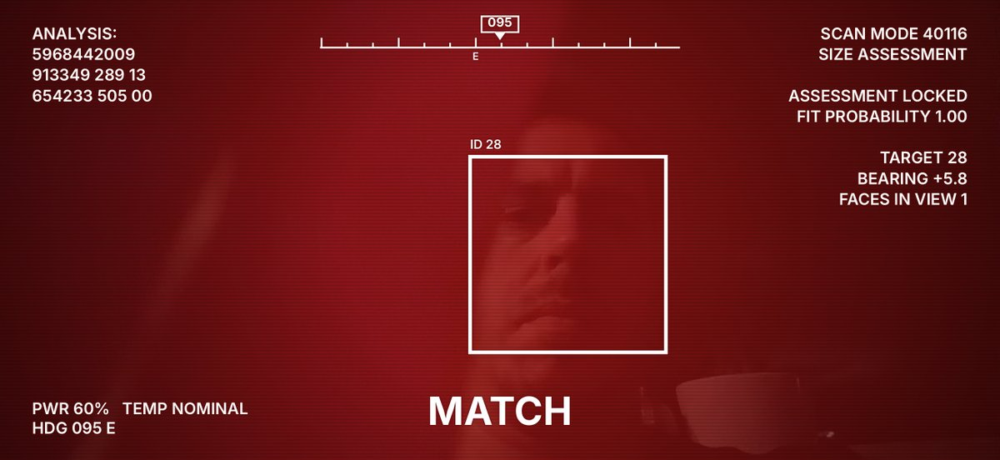
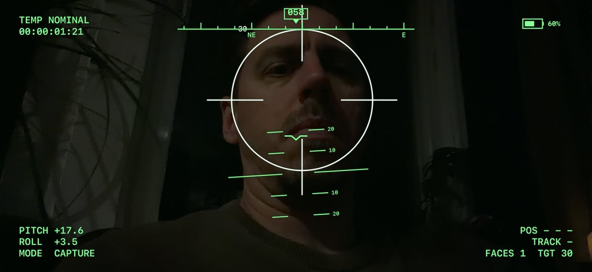
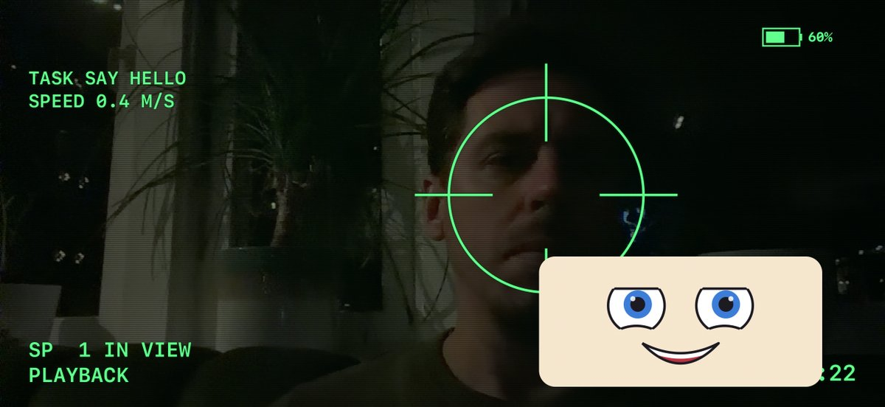
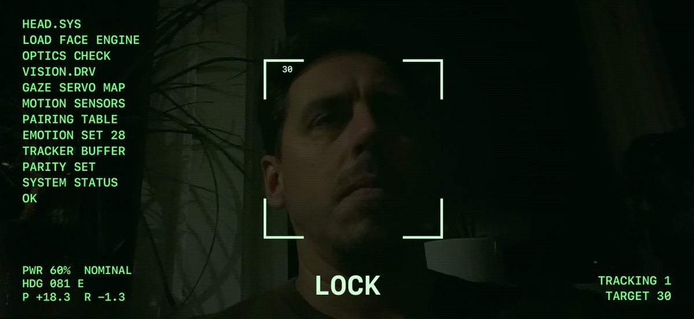
Put your own information on it
- Built-in values: battery, temperature, compass heading, pitch and roll, position, faces in view, the locked target.
- Instruments: compass tape, artificial horizon, battery gauge.
- Your robot adds its own values and lines at any time, such as task, speed or destination.
- A HUD theme is a small JSON file: colours, tint, scanlines, boxes, lock, text blocks and instruments.
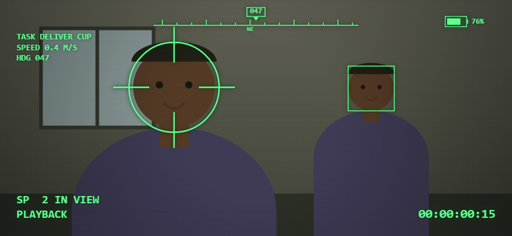
# the robot's own lines on the HUD
openhead camera camcorder --follow
openhead hud --set task="DELIVER CUP" --set speed=0.4 \
--line "TASK {task}" --line "SPEED {speed} M/S" --widget compass
Sensor data
Everything the head senses arrives as small JSON messages you subscribe to, at the rate you ask for. Angles follow the head: + to its left and up; motion follows ROS conventions. The charts below are a 15-second recording from an iPhone 18 Pro held in the hand, with one person in front of it (tools/sensor_plots.py records any head).
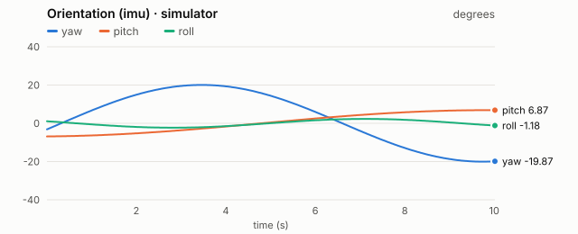
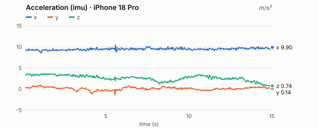
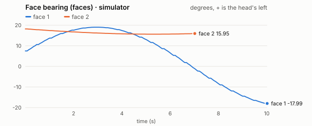
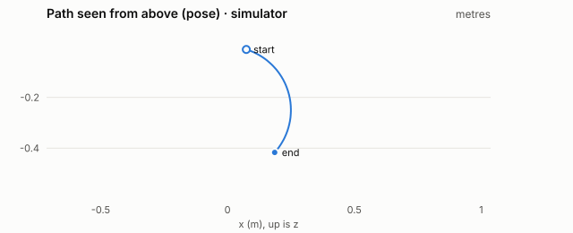
Data: imu.csv · faces.csv · pose.csv · more charts: rotation rate, position over time.


Every sensor the head uses
An iPhone 12 already carries these. OpenHead reads them and streams the results; nothing else needs to be wired to the robot.
| Sensor | What OpenHead does with it | Stream |
|---|---|---|
| Front camera (TrueDepth) | face tracking: finds several faces; with ARKit, follows one face with its distance | faces, camera view |
| Back camera | ARKit world tracking (visual-inertial SLAM): where the head is in the room and how it is turned | pose |
| Accelerometer and gyroscope | orientation, rotation rate and acceleration in ROS conventions; tilt on the HUD | imu |
| Magnetometer | magnetic field and compass heading (true north with location access) | env |
| Barometer | air pressure and altitude change | env |
| GNSS: GPS, GLONASS, Galileo, QZSS, BeiDou | latitude, longitude, altitude, accuracy, speed and course | gps |
| Microphone (from 0.4) | speech to text, on the device when it can; the head looks attentive while you talk | speech |
| Speaker (from 0.4) | the head's own voice, with the mouth moving to the sound and expressions in the right places | speech.say |
| Battery and temperature | battery level, charging and thermal state | status |
From 0.4 the microphone and the speaker too: the head speaks with its own voice and turns what you say into text. Not used: the proximity sensor (it turns the screen off and would hide the face) and the ambient light sensor (no public API). The iPhone 12 has no LiDAR, and OpenHead needs none.
| Stream | Rate | Fields | When |
|---|---|---|---|
imu | up to 100 Hz | orientation (quaternion), rotation rate, acceleration, sensor time | always |
faces | 15 Hz | id, bearing, elevation, size, confidence, box on screen, locked; distance with ARKit | modes capture and sensing |
pose | up to 60 Hz | position (m), orientation, tracking state and reason | mode sensing (ARKit) |
gps | 1 Hz | latitude, longitude, altitude, accuracy, speed, course | from 0.3; after the user allows location access |
env | up to 10 Hz | air pressure, altitude change, magnetic field, compass heading and accuracy | from 0.3; the barometer after Motion & Fitness access |
status | 1 Hz | battery, charging, thermal state, view, theme, emotion, mode, faces, clients | always |
log | as it happens | level, subsystem, message | always (dev mode to read history) |
Two camera modes, because ARKit owns the cameras: capture shows the front camera and finds several faces; sensing runs ARKit for the head's position in the room and follows one face with the depth camera.
How it works
The phone sits on the robot in landscape. Everything stays on your local network: no accounts, no cloud.
Mount and open
Put the phone on the robot in landscape and open the app. The face appears straight away.
Pair once
A controller on the same Wi-Fi finds the head and asks to pair; you type the 6-digit code shown on the screen.
Drive it
Expressions, gaze, speech, subtitles, images and video arrive as small JSON commands over a WebSocket.
Check it
In dev mode, screenshots and logs show exactly what the head did, for you or an AI agent.
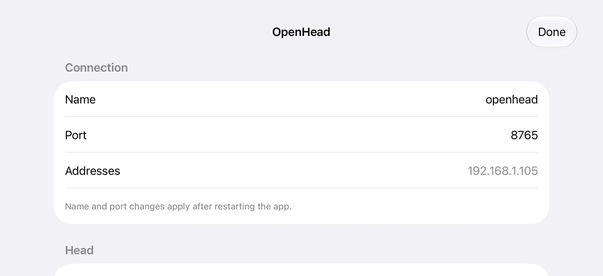
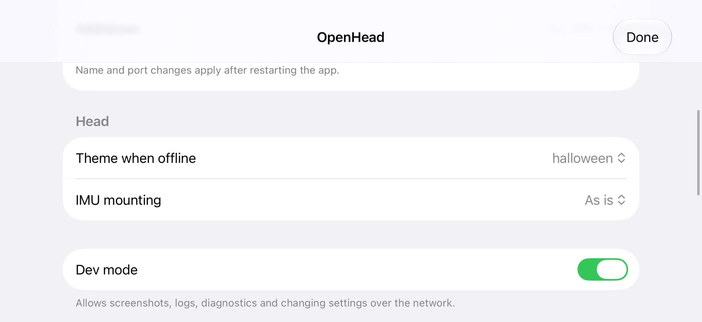
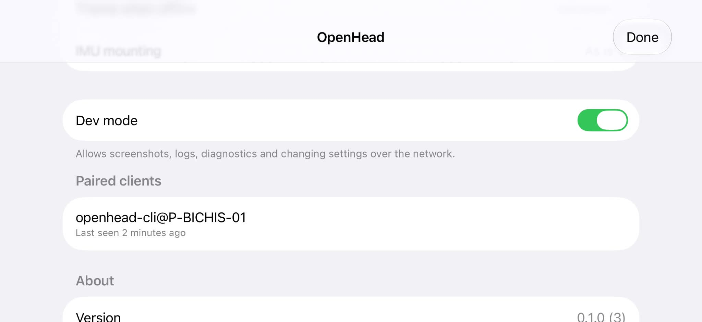
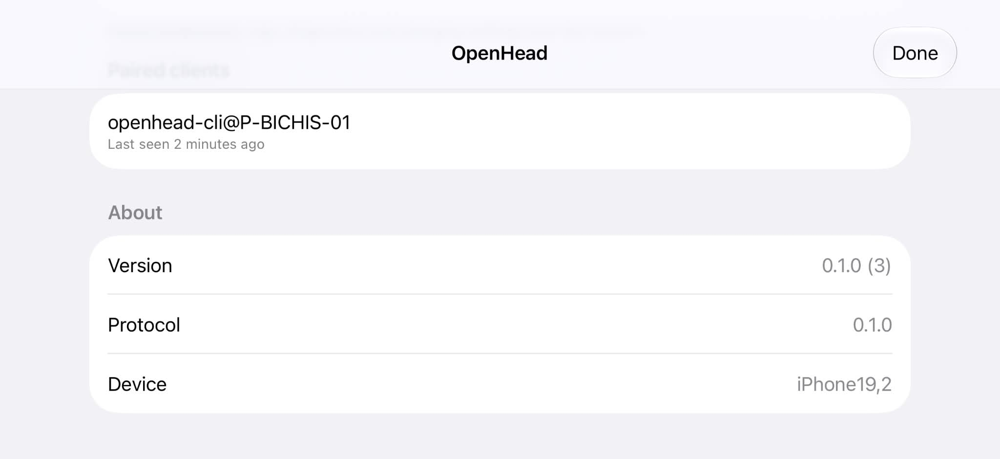
Settings on the device
- Long-press the face for 1.5 seconds to open them.
- Name and port, the theme shown when nothing is connected, and how the phone is mounted.
- See every paired controller and revoke any of them.
- Dev mode allows screenshots, logs and diagnostics over the network; leave it off on a robot in use.
Built for developers and AI agents
The protocol is the product: JSON over WebSocket with a published schema. Around it:
- A Python client and the
openheadcommand line tool. - A desktop simulator that speaks the same protocol, to develop before a servo moves.
- YAML scenarios with golden screenshots, run on the simulator and on the phone.
- An MCP server, so an AI agent can drive the head and check its work.
- Apache 2.0. Source on GitHub.
# install the tools from the Git tag uv add "openhead @ git+https://github.com/PatrikBichis/openhead@v0.3.0#subdirectory=python" # find the head and pair (type the code on screen) openhead discover openhead pair --device 192.168.1.20 # make it do things openhead emotion curious openhead subtitle "Hello! I write when I can't speak." --mouth openhead show clip.mp4 --overlay face-corner openhead camera hunter --follow openhead watch faces -n 5
Use it from an AI agent
OpenHead includes an MCP server, so an AI agent can drive the head and check its own work: emotions, subtitles, the camera with a HUD, who is in front of it, GPS and compass, screenshots. It runs on your computer and talks to the phone over Wi-Fi. You need uv and the head's address from the app's settings (or auto).
Claude Code
In a terminal:
claude mcp add openhead --scope user -- uvx --from "openhead[mcp] @ git+https://github.com/PatrikBichis/openhead@v0.3.0#subdirectory=python" openhead mcp --device 192.168.1.20
Claude Desktop
Settings → Developer → Edit Config (claude_desktop_config.json), then restart. If uvx is not found, give its full path.
{
"mcpServers": {
"openhead": {
"command": "uvx",
"args": ["--from", "openhead[mcp] @ git+https://github.com/PatrikBichis/openhead@v0.3.0#subdirectory=python", "openhead", "mcp", "--device", "192.168.1.20"]
}
}
}
Codex CLI
In a terminal, or in ~/.codex/config.toml:
codex mcp add openhead -- uvx --from "openhead[mcp] @ git+https://github.com/PatrikBichis/openhead@v0.3.0#subdirectory=python" openhead mcp --device 192.168.1.20 # or ~/.codex/config.toml [mcp_servers.openhead] command = "uvx" args = ["--from", "openhead[mcp] @ git+https://github.com/PatrikBichis/openhead@v0.3.0#subdirectory=python", "openhead", "mcp", "--device", "192.168.1.20"]
Cursor and Gemini CLI
Cursor: ~/.cursor/mcp.json. Gemini CLI: ~/.gemini/settings.json. The same block as Claude Desktop:
{
"mcpServers": {
"openhead": {
"command": "uvx",
"args": ["--from", "openhead[mcp] @ git+https://github.com/PatrikBichis/openhead@v0.3.0#subdirectory=python", "openhead", "mcp", "--device", "192.168.1.20"]
}
}
}
VS Code with GitHub Copilot
Agent mode, .vscode/mcp.json:
{
"servers": {
"openhead": {
"type": "stdio",
"command": "uvx",
"args": ["--from", "openhead[mcp] @ git+https://github.com/PatrikBichis/openhead@v0.3.0#subdirectory=python", "openhead", "mcp", "--device", "192.168.1.20"]
}
}
}
Over the network (HTTP)
For an agent on another machine: run the server on the robot's computer with a token. Without --token it only listens on 127.0.0.1.
openhead mcp --http 0.0.0.0:8800 --token "$(openssl rand -hex 16)" --device 192.168.1.20 # Claude Code on the other machine claude mcp add --transport http openhead http://robot-pc.local:8800/mcp --header "Authorization: Bearer <token>"
First time: ask the agent to pair with the head and read it the 6-digit code on the phone. Then try “Look curious and write Hello as a subtitle”, “Show the camera with the hunter HUD; how many people do you see?” or “Which way is the head facing, and what is the air pressure?”
Questions
Does the app work on its own?
It shows the face and stays alive with blinking and breathing, but it is meant to be driven: by your robot's computer, a script or an AI agent on the same network.
Which devices are supported?
iPhone 12 or newer and iPads with iPadOS 17 or later. iPhone 12 is the baseline every feature is built and tested for.
Does it collect any data?
No. Nothing leaves your local network and there are no accounts, analytics or ads. Location and sensor readings go only to the controllers you paired, and only when they ask. See the privacy policy.
Does the camera record or send video?
No. The camera only runs when a paired controller asks for it, images are processed on the phone and never stored or sent. Only positions and angles of faces leave the phone, and nobody is identified. See the privacy policy.
Can I use it with ROS 2?
Yes, through a bridge built on the Python client. The head knows nothing about the robot's body; the robot owns its kinematics.